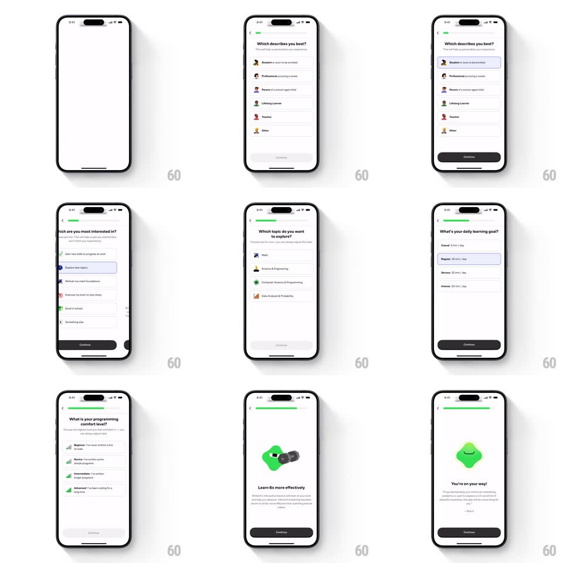

Media
Frame-by-frame

Rebuild this interaction 1:1: Brilliant's onboarding quiz - a step-by-step personalization flow with sliding question cards, a filling green progress bar, and mascot interstitials.

Rebuild this interaction 1:1: Brilliant's onboarding quiz - a step-by-step personalization flow with sliding question cards, a filling green progress bar, and mascot interstitials. ## Integration Integration: stack-agnostic spec - springs given as stiffness/damping, timed motions as duration + curve; map every value to your framework and animation library of choice. ## Scene A multi-step questionnaire: "Which describes you best?" (Student, Professional, Parent, Lifelong Learner, Teacher, Other), "Which are you most interested in?", a "You're in the right place" interstitial with floating sticker cards, a daily-goal picker (Casual 5 min/day to Intense 20 min/day), a notification-permission ask with the green mascot, a "Learn 6x more effectively" stat page, and a closing "You're on your way!" quote. ## Motion spec Pattern: stepped questionnaire with slide transitions. - Screens slide horizontally (1:1 swipe-able, snap spring ~340/26); forward motion enters from the right, back from the left. - The top progress bar fills green toward the right with each answered step (300ms ease-out per increment); it never regresses on back-navigation, only pauses. - Option rows stagger in on each question screen (translateY 14px to 0, 200ms, 50ms apart). Tapping a row selects it: a soft gray fill sweeps left to right (150ms) and the whole card auto-advances after 250ms. - Interstitial pages: sticker illustration cards float in on individual lazy arcs (translate from off-screen with rotation +-8 degrees settling to 0, spring ~300/20, 100ms stagger) and idle with a slow bob (+-4px, 2s sine, phase-offset per card). - The mascot pages pop the character with a squash-and-stretch (scaleY 0.8 to 1.05 to 1, 400ms) before the headline fades up. - Notification ask: the system-style dialog slides down from the top (spring ~360/24) over the dimmed mascot page. ## Calibration - Auto-advance after selection is fast (250ms) but cancelable: a second tap elsewhere before the slide starts aborts it. - Interstitials break the question rhythm - no progress increment on those screens. ## Reduced motion Screens crossfade; cards and mascot set without stagger or bob. ## Don't miss - The progress bar is thin, top-anchored, and Brilliant green; everything else is grayscale plus the mascot's green. - "You're in the right place" shows floating mini-cards of course content, not a single hero image.